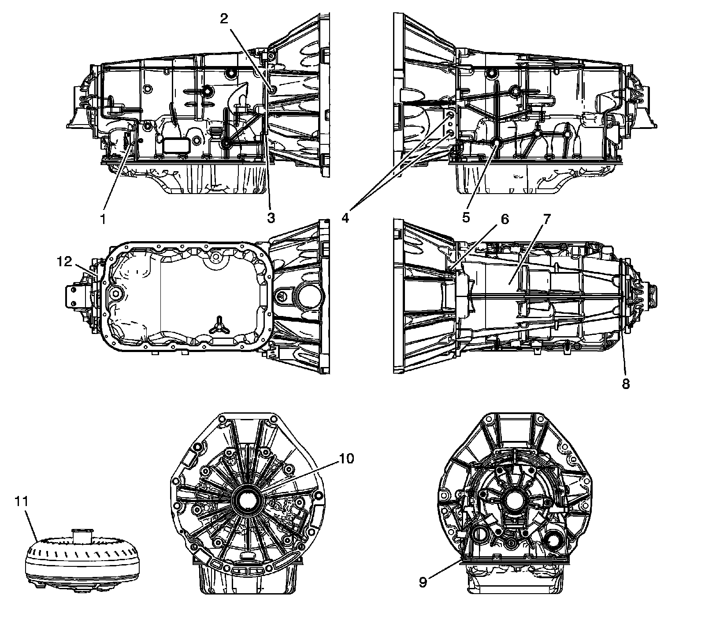

Fluid Leak Diagnosis
Fluid Leak Diagnosis
General Method
1. Verify that the leak is transmission fluid.
2. Thoroughly clean the suspected leak area.
3. Operate the vehicle for 24 km (15 mi), or until normal operating temperatures are reached.
4. Park the vehicle over clean paper or cardboard.
5. Shut OFF the engine.
6. Look for fluid spots on the paper.
7. Make the necessary repairs.
Powder Method
1. Thoroughly clean the suspected leak area with solvent.
2. Apply an aerosol type powder, such as foot powder, to the suspected leak area.
3. Operate the vehicle for 24 km (15 mi), or until normal operating temperatures are reached.
4. Shut OFF the engine.
5. Inspect the suspected leak area.
6. Trace the leak path through the powder in order to find the source of the leak.
7. Make the necessary repairs.
Dye and Black Light Method
A fluid dye and black light kit is available from various tool manufacturers.
1. Follow the manufacturer's instructions in order to determine the amount of dye to use.
2. Detect the leak with the black light.
3. Make the necessary repairs.
Find the Cause of the Leak
Pinpoint the leak and trace the leak back to the source. You must determine the cause of the leak in order to repair the leak properly. For example, if you replace a gasket, but the sealing flange is bent, the new gasket will not repair the leak. You must also repair the bent flange. Before you attempt to repair a leak, check for the following conditions, and make repairs as necessary:
Gaskets
* Fluid level/pressure is too high
* Plugged vent or drain-back holes
* Improperly tightened fasteners
* Dirty or damaged threads
* Warped flanges or sealing surface
* Scratches, burrs, or other damage to the sealing surface
* Damaged or worn gasket
* Cracking or porosity of the component
* Improper sealant used, where applicable
* Incorrect gasket
Seals
* Fluid level/pressure is too high
* Plugged vent or drain-back holes
* Damaged seal bore
* Damaged or worn seal
* Improper installation
* Cracks in component
* Manual or output shaft surface is scratched, nicked, or damaged
* Loose or worn bearing causing excess seal wear
Possible Points of Fluid Leaks
Transmission Oil Pan
* Incorrectly tightened oil pan bolts
* Improperly installed or damaged oil pan gasket
* Damaged oil pan or mounting face
* Incorrect oil pan gasket
Case Leak
* Damaged vehicle speed sensor seal
* Damaged manual shaft seal
* Loose or damaged oil cooler connector fittings
* Worn or damaged propeller shaft oil seal
* Loose line pressure pipe plug
* Porous casting warped torque converter housing
Leak at the Torque Converter End
* Converter leak in the weld area
* Converter seal lip cut. Check the converter hub for damage
* Converter seal bushing moved forward and damaged
* Converter seal garter spring missing from the seal
* Porous casting of the transmission case or the oil pump
Leak at the Vent Pipe
* Overfilled system
* Water or coolant in the fluid; The fluid will appear milky
* Transmission case porous
* Incorrect fluid level indicator
* Plugged vent
* Drain-back holes plugged
* Mispositioned oil pump to case gasket, if equipped
Leak Inspection Points
Leak Inspection Points:

1 - Automatic Transmission Electrical Connector Passage Sleeve
2 - Line Pressure Test Hole Plug
3 - Converter Housing to Case Joint
4 - Trans Fluid Cooler Pipe Fitting Seals
5 - Manual Shift Shaft Seal
6 - Automatic Transmission Vent Pipe
7 - Transmission Case Assembly
8 - A/Trans Case Extension Seal - 2WD Model Only
9 - A/Trans Fluid Pan Gasket
10 - Torque Converter Fluid Seal Assembly
11 - Torque Converter Assembly
12 - Case Extension to Case Joint